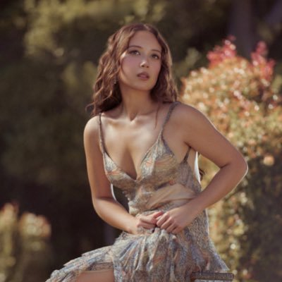

Seja muito bem-vindo ao Cantinho da Laufey!
O Cantinho da Laufey é um projeto idealizado por Clark Kalel, criado a partir da admiração e do carinho pelo trabalho de Laufey. Mais do que um espaço dedicado à cantora, queremos construir uma comunidade acolhedora para todos aqueles que encontram em sua música algo especial.
Nossa proposta é reunir tudo aquilo que envolve o universo da Laufey: notícias, novidades, fotografias, vídeos, curiosidades, lançamentos e momentos importantes de sua trajetória artística. Também queremos proporcionar um ambiente onde os fãs possam conversar, compartilhar suas experiências, conhecer outras pessoas e celebrar juntos o trabalho da cantora.
Inspirado pela delicadeza, elegância e sensibilidade presentes na identidade musical de Laufey, o projeto busca transmitir essa mesma atmosfera em cada detalhe.
Acima de tudo, queremos que este seja um espaço feito por fãs e para fãs, onde a admiração pela música possa aproximar pessoas e criar boas lembranças.
Um pequeno cantinho para quem encontra algo especial nas canções de Laufey. ♡
Projeto independente, idealizado por Clark Kalel, sem vínculo oficial com Laufey ou sua equipe.